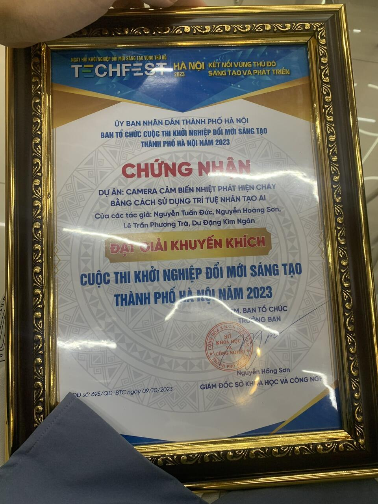
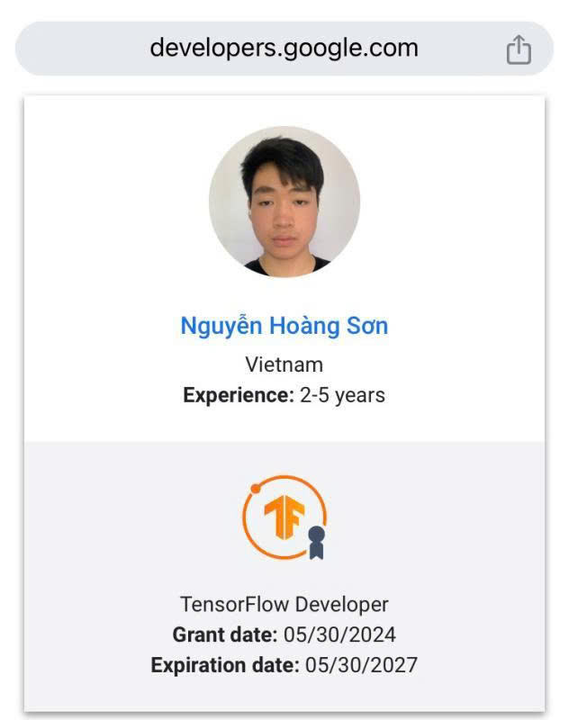

TALAS: Teacher-Anchored Layer Alignment with Adaptive Sharpness-Aware Minimization for Embedding Distillation ↗
Quoc Phong Dao, Hoang Son Nguyen, Pham Khanh Chi et al.
AI Researcher · Product Builder
Visit my Google Scholar profile for the most up-to-date publication list.
Quoc Phong Dao, Hoang Son Nguyen, Pham Khanh Chi et al.
Quoc Phong Dao, Hoang Son Nguyen, Pham Khanh Chi et al.
Quoc Phong Dao, Hoang Son Nguyen, Pham Khanh Chi et al.
Faculty collaborators
Students & mentees

Hanoi City Innovation and Entrepreneurship Competition.
In a real-world application, the camera would scans one floor of the building to produce a general drawing of the building and includes a heat map. Signals are sent to the system for analysis when there is a sudden increase in heat. The analysis takes place across two layers. The first layer uses a rule-based approach that combines color analysis and dynamic texture recognition to detect fast-moving red regions—potential indicators of fire. The second layer performs foreground object detection to filter out objects unlikely to ignite, such as cigarettes or gas stoves. The camera then gives a warning.

TensorFlow Developer Certificate
I earned the TensorFlow Developer Certificate, demonstrating practical proficiency in building and deploying machine learning models with TensorFlow. View the certification directory ↗